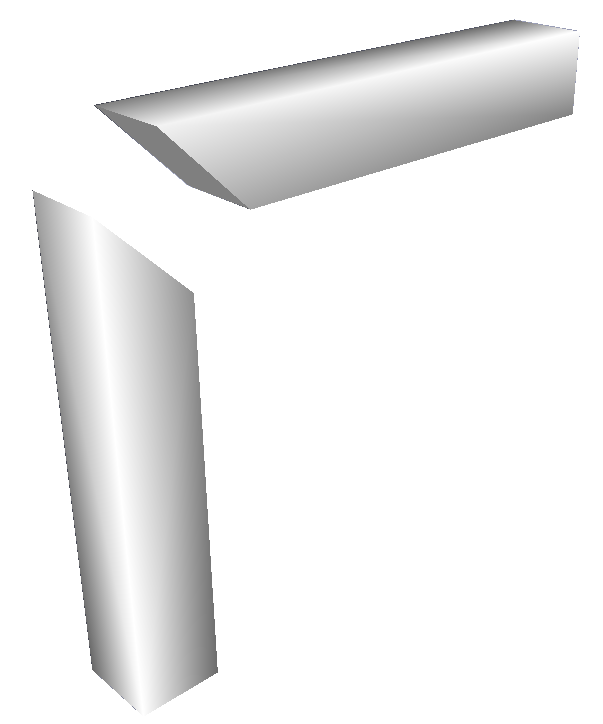
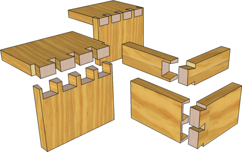
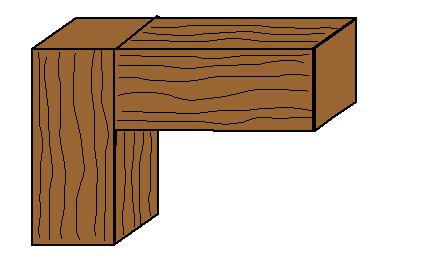
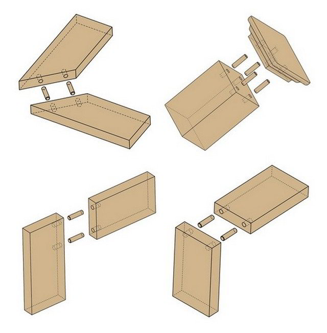
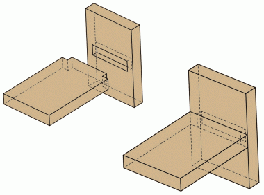
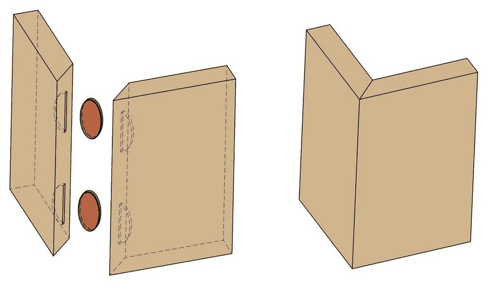
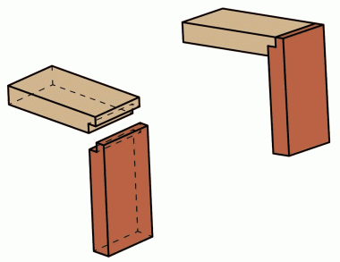
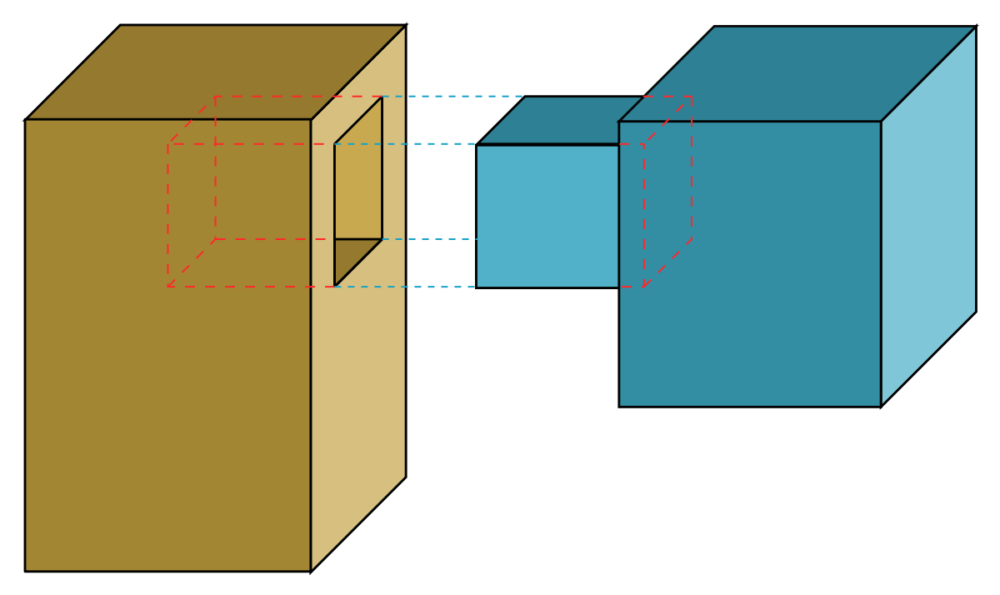

Research
Name: Miter Joint
Definition: A miter joint is made by cutting each joint at a 45 degree angle to form a corner and gluing them together.
Picture:

Uses/Best used for: A miter joint is used for connecting joints at a ninety degree angle or a corner. They aren’t particularly strong and are usually used on small objects such as small boxes and picture frames.
Name: Half Lap Joint
Definition: A half lap joint is a joint where two pieces of wood have a rectangle cut out at the end of the pieces which then overlap each other and are glued together.
Picture:
 Uses/Best used for: Half joints are also used to connect joints at a ninety degree angle and are usually used when building and framing lumber.
Uses/Best used for: Half joints are also used to connect joints at a ninety degree angle and are usually used when building and framing lumber.
Name: Dovetail Joint
Definition: A dovetail joint is when a series of 'pins' cut to extend from the end of one board interlock with a series of 'tails' cut into the end of another board. A dovetail is a very strong joint but one of its disadvantages is the cutting and marking of it due to all its pins.
Picture:

Uses/Best used for: A dovetail is commonly used to join the sides of drawers, cabinets and boxes. A sliding dovetail can also be used to create an intersection that is not at the end.
Name: Butt Joint
Definition: A butt joint is probably the simplest and easiest joint to make as it is just connecting to pieces together without doing any cuts. It is a simple joint to make but its disadvantage is that it doesn’t hold very well.
Picture:

Uses/Best used for: A butt joint is used to create frames, widen boards, and create carasses.
Name: Pocket Screw
Definition: Pocket screw joinery involve drilling a hole usually at a 15 degree angle into the first piece and joining it to the second with a screw
Picture:
 Uses/Best used for: Pocket screw joineries are stronger (due to the screw) and are used to connect harder and heavier intersections.
Uses/Best used for: Pocket screw joineries are stronger (due to the screw) and are used to connect harder and heavier intersections.
Name: Dowel Joint
Definition: Dowel joints involves inserting wooden sticks or dowels into holes in one piece of wood which is then connected into the other piece.
Picture:

Uses/Best used for: Dowels are used for making strong, accurate joints in wood. They are thicker and sturdier than nails or screws and therefore less prone to breakage. They provide a stronger joint than just using glue as they insert into both the pieces of wood being joined together. This means they cannot easily snap apart.
Name: Dado
Definition: A dado joint is when in one piece of wood there is a slot or a channel cut into the surface and the other piece is glued inside it.
Picture:

Uses/Best used for: The dado joint makes a strong and simple connection between component pieces of bookshelves, drawers, cabinets, and other casework.
Name: Biscuit
Definition: A biscuit joint is when you connect two pieces of wood in an intersection together using tiny circles or biscuits.
Picture:

Uses/Best used for: Biscuits joints are easy to mark and cut and while not being one of the stronger joineries, biscuit joints are still pretty strong and are also used for alignment.
Name: Rabbet
Definition: A rabbet joint is similar to the dado joint but instead the channel being somewhere in the middle, it is on the edges.
Picture:

Uses/Best used for: Because of its limited mechanical properties, the rabbet should be limited to small scale structural applications, like small boxes, wall cabinets, and desk organizers. The rabbet joint is used primarily to set backboards onto the back of a case piece or to accommodate the glass on a mirror frame.
Name: Mortise and Tenon
Definition: A mortise and tenon joinery is a joint with two pieces, one with a hole and one with an “extension” (same length, width,and depth) at the end of it that are glued together.
Picture:

Uses/Best used for: Mortise-and-tenon joints are among the strongest joints in woodworking, and are used for projects that have frame construction and need to be strong. Chairs and tables use them as does most Arts and Crafts and Mission style furniture.
Name: Tongue and Groove
Definition: a joint between two boards in which a raised area on the edge of one board fits into a corresponding groove in the edge of the other to produce a flush surface.
Picture:
 Uses/Best used for: Tongue and groove joints are used for many projects such as sheathing buildings and to construct concrete formwork.
Uses/Best used for: Tongue and groove joints are used for many projects such as sheathing buildings and to construct concrete formwork.